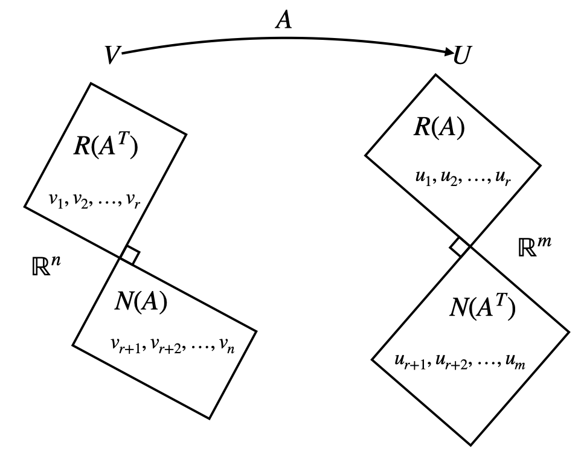

[矩阵论]4.4矩阵的奇异值分解
预备知识
定理：对任意 \(A\in\mathbb C^{m\times n}\)，\(A^HA\) 是 Hermite 半正定矩阵。
证明：\(\forall x\neq 0\)，\(x^HA^HAx=(Ax)^H(Ax)=\Vert Ax\Vert^2\geq 0\). 证毕。
定理：齐次方程组 \(Ax=0\) 与 \(A^HAx=0\) 同解。
证明：若 \(Ax=0\)，则显然 \(A^HAx=0\)；另一方面， \[A^HAx=0\implies x^HA^HAx=0\implies\Vert Ax\Vert=0\implies Ax=0\] 证毕。
定理：\(\text{rank}(A)=\text{rank}(A^HA)\).
证明：根据上一个定理，\(A\) 与 \(A^HA\) 的零空间相同，因此维数相同，即 \(n-\text{rank}(A)=n-\text{rank}(A^HA)\)，故 \(\text{rank}(A)=\text{rank}(A^HA)\). 证毕。
定理：\(A=O_{m\times n}\iff A^HA=O_{m\times n}\).
证明：必要性显然；充分性：根据上一个定理，\(\text{rank}(A)=\text{rank}(A^HA)=0\)，所以 \(A=O\). 证毕。
Hermite 矩阵的谱分解
Hermite 矩阵 \(A\) 酉相似于对角阵： \[ U^HAU=\Lambda=\begin{bmatrix}\lambda_1&&&\\&\lambda_2&&\\&&\ddots&\\&&&\lambda_n\end{bmatrix} \] 或写作谱分解的形式： \[ A=U\Lambda U^H= \begin{bmatrix} u_1&u_2&\cdots&u_n \end{bmatrix} \begin{bmatrix} \lambda_1&&&\\ &\lambda_2&&\\ &&\ddots&\\ &&&\lambda_n \end{bmatrix} \begin{bmatrix} u_1^H\\u_2^H\\\vdots\\u_n^H \end{bmatrix}=\sum_{i=1}^n\lambda_iu_iu_i^H \] 其中 \(U\) 为酉矩阵，列向量为 \(A\) 的特征向量，\(\Lambda\) 对角元为 \(A\) 的特征值。
非奇异方阵的酉对角分解
设 \(A\) 为 \(n\) 阶非奇异矩阵，则存在 \(n\) 阶酉矩阵 \(U\) 和 \(V\)，使得： \[ U^HAV=\Sigma=\begin{bmatrix}\sigma_1&&&\\&\sigma_2&&\\&&\ddots&\\&&&\sigma_n\end{bmatrix},\quad\sigma_i>0 \] 或写作矩阵分解形式： \[ A=U\Sigma V^H= \begin{bmatrix} u_1&u_2&\cdots&u_n \end{bmatrix} \begin{bmatrix} \sigma_1&&&\\ &\sigma_2&&\\ &&\ddots&\\ &&&\sigma_n \end{bmatrix} \begin{bmatrix} v_1^H\\v_2^H\\\vdots\\v_n^H \end{bmatrix}=\sum_{i=1}^n\sigma_iu_iv_i^H \]
证明：由于 \(A^HA\) 是非奇异 Hermite 半正定矩阵，因此其谱分解为： \[A^HA=V\Sigma^2V^H=V\begin{bmatrix}\sigma_1^2&&&\\&\sigma_2^2&&\\&&\ddots&\\&&&\sigma_n^2\end{bmatrix}V^H\] 其中 \(\sigma_i^2\) 是 \(A^HA\) 的特征值。令 \(U=AV\Sigma^{-1}\)，则： \[U^HU=\Sigma^{-1}V^HA^HAV\Sigma^{-1}=\Sigma^{-1}V^H(V\Sigma^2V^H)V\Sigma^{-1}=I\] 因此 \(U\) 也是酉矩阵。并且： \[U\Sigma V^H=AV\Sigma^{-1}\Sigma V^{H}=A\] 证毕。
酉对角分解的计算方法就是证明中的构造方法：先将 \(A^HA\) 酉对角化，求解 \(V\) 和 \(\Sigma\)，再令 \(U=AV\Sigma^{-1}\) 即可。
将 \(A\) 视作 \(\mathbb C^n\) 上的线性变换： \[A=U\Sigma V^H\iff AV=U\Sigma\] 因此酉对角分解相当于\(A\) 在基 \(U,V\) 下的表示矩阵为 \(\Sigma\).
一般矩阵的奇异值分解
设 \(A\in\mathbb C^{m\times n}_r\)，则存在 \(m\) 阶酉矩阵 \(U\) 和 \(n\) 阶酉矩阵 \(V\) 使得： \[ U^HAV=\Sigma=\begin{bmatrix} \sigma_1&&&&O\\ &\sigma_2&&&\\ &&\ddots&&\\ &&&\sigma_r&\\ O&&&&O \end{bmatrix},\quad\sigma_i>0 \] 或写作矩阵分解形式： \[ A=U\Sigma V^H= \begin{bmatrix} u_1&u_2&\cdots&u_m \end{bmatrix}\begin{bmatrix} \sigma_1&&&&O\\ &\sigma_2&&&\\ &&\ddots&&\\ &&&\sigma_r&\\ O&&&&O \end{bmatrix} \begin{bmatrix} v_1^H\\v_2^H\\\vdots\\v_n^H \end{bmatrix} \]
证明：由于 \(A^HA\) 是 Hermite 半正定矩阵，因此其谱分解为： \[A^HA=V\begin{bmatrix}\Sigma^2_r&O\\O&O\end{bmatrix}V^H\] 划分 \(V=(V_1\mid V_2)\)，其中 \(V_1\) 是 \(V\) 的前 \(r\) 列，\(V_2\) 是 \(V\) 的后 \(n-r\) 列，于是： \[A^HAV=V\begin{bmatrix}\Sigma^2_r&O\\O&O\end{bmatrix}\implies\left(A^HAV_1\mid A^HAV_2\right)=\left(V_1\Sigma^2_r\mid O\right)\] 也即：
- \(A^HAV_1=V_1\Sigma^2_r\implies V_1^HA^HAV_1=\Sigma^2_r\implies(AV_1\Sigma_r^{-1})^H(AV_1\Sigma_r^{-1})=I\)
- \(A^HAV_2=O\implies V_2^HA^HAV_2=O\implies(AV_2)^H(AV_2)=O\implies AV_2=O\)
令 \(U_1=AV_1\Sigma^{-1}_r\in\mathbb C^{m\times r}\)，容易验证 \(U_1^HU_1=I\). 将 \(U_1\) 的列扩充为 \(\mathbb C^m\) 的标准正交基构成 \(U=\left[\begin{array}{c:c}U_1&U_2\end{array}\right]\)，那么： \[U^HAV=U^H\left[\begin{array}{c:c}AV_1&AV_2\end{array}\right]=\begin{bmatrix}U_1^H\\U_2^H\end{bmatrix}\left[\begin{array}{c:c}U_1\Sigma_r&O\end{array}\right]=\begin{bmatrix}U_1^HU_1\Sigma_r&O\\U_2^HU_1\Sigma_r&O\end{bmatrix}=\begin{bmatrix}\Sigma_r&O\\O&O\end{bmatrix}\] 证毕。
奇异值分解的计算方法就是证明中的构造方法：先求解 \(A^HA\) 的特征向量 \(V\) 和特征值 \(\Sigma^2\)，再计算 \(U_1=AV_1\Sigma_r^{-1}\)，然后将其列扩充为标准正交基构成 \(U\).
当然换一个方向也可以：先求解 \(AA^H\) 的特征向量 \(U\) 和特征值 \(\Sigma^2_r\)，再计算 \(V_1=A^{-1}U_1\Sigma_r\)，然后将其列扩充为标准正交基构成 \(V\). 一般可以根据 \(A^HA\) 和 \(AA^H\) 哪个矩阵更小更好算决定选择哪一种方法。
注意：不能计算 \(A^HA\) 的特征向量作为 \(V\)，同时计算 \(AA^H\) 的特征向量作为 \(U\).
将 \(A\) 视作 \(\mathbb C^n\) 到 \(\mathbb C^m\) 的线性映射： \[A=U\Sigma V^H\iff AV=U\Sigma\] 因此奇异值分解相当于\(A\) 在基 \(U,V\) 下的表示矩阵为 \(\Sigma\).
秩 \(k\) 最佳逼近：设 \(A=U\Sigma V^H\)，定义 \(A_k\) 为： \[ A_k=\sum_{i=1}^k\sigma_iu_iv_i^H,\quad k<r \] 则： \[ \begin{align} &\min_{\text{rank}(B)=k}\Vert A-B\Vert_1=\Vert A-A_k\Vert_1=\sigma_{k+1}\\ &\min_{\text{rank}(B)=k}\Vert A-B\Vert_F^2=\Vert A-A_k\Vert_F^2=\sigma_{k+1}^2+\cdots\sigma_{r}^2 \end{align} \] 定理：设 \(A=U\Sigma V^H\)，则： \[ \begin{align} &N(A)=\text{span}\{v_{r+1},v_{r+2},\ldots,v_{n}\}\\ &R(A)=\text{span}\{u_1,u_2,\ldots,u_r\} \end{align} \]
证明：设 \[A=U\Sigma V^H=\begin{bmatrix}U_1&U_2\end{bmatrix}\begin{bmatrix}\Sigma_r&O\\O&O\end{bmatrix}\begin{bmatrix}V_1^H\\V_2^H\end{bmatrix}=U_1\Sigma_rV_1^H\]
容易验证： \[U_1\Sigma_rV_1^Hx=0\iff V_1^Hx=0\] (1). \[\begin{align}N(A)&=\{x\mid Ax=0\}=\{x\mid U_1\Sigma V_1^Hx=0\}\\&=\{x\mid V_1^Hx=0\}=N(V_1^H)=R^{\perp}(V_1)\\&=R(V_2)=\text{span}\{v_{r+1},\ldots,v_n\}\end{align}\] (2). \[\begin{align}&R(A)=\{y\mid y=Ax\}=\{y\mid y=U_1(\Sigma V_1^Hx)\}\subset\{y\mid y=U_1z\}=R(U_1)\\&R(U_1)=\{y\mid y=U_1z\}=\{y\mid y=A(V_1\Sigma_1^{-1}z)\}\subset\{y\mid y=Ax\}=R(A)\\\implies&R(A)=R(U_1)=\text{span}\{u_1,u_2,\ldots,u_r\}\end{align}\]
该定理可以形象化地绘制作下图：

补充（正规矩阵的奇异值分解）：设 \(A\) 是正规矩阵（即 \(A^HA=AA^H\)），则 \(A\) 酉相似于对角矩阵，即存在酉矩阵 \(U\) 使得： \[ A=U\begin{bmatrix} \lambda_1&&&&&\\ &\ddots&&&&\\ &&\lambda_r&&&\\ &&&0&&\\ &&&&\ddots&\\ &&&&&0\\ \end{bmatrix}U^H \] 其中 \(\lambda_i\) 是 \(A\) 的特征值（注意可能为负）。那么可以构造奇异值分解如下： \[ A=U\underbrace{\begin{bmatrix} |\lambda_1|&&&&&\\ &\ddots&&&&\\ &&|\lambda_r|&&&\\ &&&0&&\\ &&&&\ddots&\\ &&&&&0\\ \end{bmatrix}}_{\Sigma} \underbrace{\begin{bmatrix} \lambda_1/|\lambda_1|&&&&&\\ &\ddots&&&&\\ &&\lambda_r/|\lambda_r|&&&\\ &&&1&&\\ &&&&\ddots&\\ &&&&&1\\ \end{bmatrix}U^H}_{V^H} \]
正交相抵
定义：设有矩阵 \(A_{m\times n},\,B_{m\times n}\)，若存在酉矩阵 \(U_{m\times m},\,V_{n\times n}\) 使得 \(U^HAV=B\)，则称 \(A\) 与 \(B\) 正交相抵。
性质：正交相抵是一个等价关系，即满足自反性、对称性和传递性。
定理：若 \(A\) 与 \(B\) 正交相抵，则 \(\sigma_A=\sigma_B\).
证明：\(B=U^HAV\implies B^HB=V^HA^HUU^HAV=V^HA^HAV\implies\lambda_{B^HB}=\lambda_{A^HA}\implies \sigma_B=\sigma_A\). 证毕。